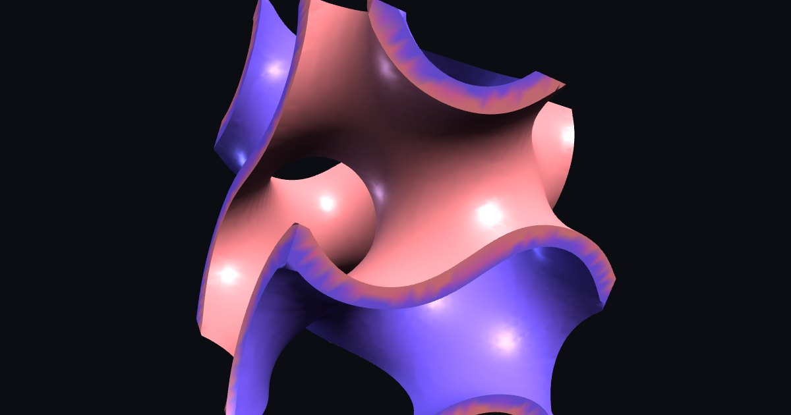

Math Explorer · Labyrinths
Labyrinths: fly through the gyroid, 3D mazes and ancient labyrinths
Endless curved labyrinths to fly through, mazes to solve, and the one-path labyrinths of ancient Crete.

The gyroid is a surface that divides all of space into two interlocking labyrinths, each a mirror of the other, that never meet. It turns up in butterfly wings and in the plastics of the future. Math Explorer has eight of these triply periodic surfaces, endless in every direction, to fly through while hunting for a beacon.
There are 3D mazes too, built by three different algorithms, to drive yourself or race against the solver, with a score against the shortest route; the hand-on-the-wall rule works until a maze has loops. And the ancient one-path labyrinths are here, with a generator that counts how many different ones there can be. The walls can wear patterns from the Tilings explorer.
Things to try
- Press G to fly through the gyroid and find the beacon
- Drive a 3D maze and compare your route with the shortest
- Watch the left-hand rule fail in a maze with loops
- Make a new ancient labyrinth
- Put a Penrose tiling on the walls